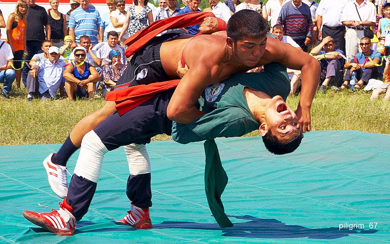
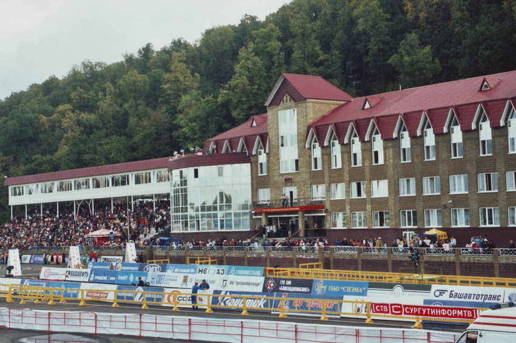

Спорт республики Башкортстан
Башкирский спорт получил большое развитие во второй половине XX века. С тех пор спортсмены края не раз достигали невероятных результатов, совершенствуя свои навыки. Давайте рассмотрим виды спорта, в которых Башкортстан преуспел.
Хоккей. Хоккейный клуб "Салават Юлаев" основан в 1961 году. Свой первый матч команда провела на турнире в Свердловской области.
Перед сезоном 1961/1962 был приглашен челябинский тренер Владимир Штырков. 8 из 19 игроков команды были игроки уфимского клуба "Труд". Свой первый матч в классе "Б" уфимцы сыиграли 25 ноября 1961 года в Челябинске, где проиграли "Металлургу" 1:3, ныне эта команда называется "Челмет". К сведенью, в класс А (Высшую Лигу) хоккейсты республики попали в 1979 году.
У Салавата Юлаева много достижений, таких как:
- Дважды чемпион России(2007/2008; 2010/2011)
- Обладатель кубка "Гагарина"(2010/2011)
- Дважды обладатель кубка "открытия"(2008/2009; 2011/2012)
- Обладатель кубка "континента"(2009/2010)
Также у "Салавата Юлаева" очень много знаменитых воспитанников, ставшие впоследствии заслуженными мастерами спорта:
- Ирек Гимаев
- Сергей Гимаев
- Игорь Кравчук
- Александр Семак
Кроме того, есть мастера спорта международного класса, это:
- Денис Афиногенов
- Михаил Анферов
- Сергей Бушмелёв
- Сергей Гомоляко
- Анатолий Емелин
Сейчас "Салават Юлаев" играет в Континентальной хоккейной лиге Восточной конференции, в дивизионе Чернышева. Домашняя арена-УСА "Уфа арена" вместимостью на 8070 человек.
Также в систему уфимского клуба входят такие команды, как "Толпар", "Торос" и "Агидель". Немного о них:
Хоккейный клуб "Толпар" выступает в молодежной хоккейной лиге восточной конференции. До 2009 года хоккейный клуб носил название "Салават Юлаев 2". "Толпар" бронзовый призер чемпионата МХЛ 2009/2010; 2010/2011, а также серебряный призер кубка мира молодёжных клубных команд 2014 года. Сейчас "Толпар" играет во дворце спорта "Салават Юлаев", вместимостью 3501 человек.
Хоккейный клуб "Торос" города Нефтекамск основан а 1988 году. Выступает в высшей хоккейной лиге. "Торос" обладатель кубка "картины" (2011/2012; 2012/2013; 2014/2015), а также кубка "открытия" (2010; 2012; 2013). Домашняя арена - "Нефтекамский ледовый" дворец вместимостью 2000 человек.
"Агидель" женский хоккейный клуб из Уфы, играющий в женской хоккейной лиге и основанный 31 августа 2010 года.
Интересный факт: "Агидель" провела свой первый матч 23 сентября 2010 года в гостях, против "Скиф", проиграв матч со счетом 26:0. В своём первом сезоне клуб так и не смог победить ни одного матча из 30. За эти матчи "Агидель" забросила 22 шайбы и пропустила 288.
"Агидель" бронзовый призер чемпионата ЖХЛ (2011/2012; 2012/2013; 2013/2014; 2014/2015), а также серебряный призер (2015/2016; 2016/2017) и чемпион 2017/2018. Домашняя арена - дворец спорта "Салават Юлаев" вместимостью 3501 человек.
Борьба на поясах (Курәш). Курәш на территории республики существовал с древних времён, ещё до присоединения Башкирии к России. Предположительно, данный вид борьбы пришёл с исламом (в годы монгольского нашествия), который не утратил своей популярности до сих пор.
Соревнования по борьбе на поясах проходят на сабантуях и других народных праздниках. Основные правила борьбы:
- Борьба проходит в стойке стоя. Все броски, выполненные в стойке, оценивают судьи
- Если оценки соперников равны, победу присуждают по последней оценке
- Если участником (участницей) получена как оценка, так и наказание, преимущество отдается оценке
- Состязания проводят по олимпийской системе, утешительные схватки отсутствуют
- В Курәше проводят оценку приёмам, которые были начаты внутри безопасной территории татами и завершены за границами опасной линии татами
С 1948 года ежегодно проводились чемпионаты Башкирии. В Башкортостане действует около 70 отделений по курәшу в спортивных школах, где на 2012 год занимались свыше 12 тысяч человек. Воспитанники спортивных школ республики многократно становились чемпионами РСФСР, России и Мира, победителями Кубка мира и других международных соревнований. С 1966 года функционирует Федерация по национальной борьбе — курәш Республики Башкортостан.
Футбол. активно развиваться футбол начал только с 2010 года. Конечно, существовали футбольные команды ещё в далёком начале XX века: это сборная команда Уфы (1909), Стерлитамак (1912), Белебее (1922) и других городах края. Даже в 1913 году футбольная команда Уфы заняла I место в первом Чемпионате Урала по футболу, а позже, в 1923 году, бронзовым призёром олимпиады Поволжья. Однако, в СССР башкирский футбол развития не получил.
С распадом Советского Союза постепенно футбол начал внедряться в спорт республики: в 1997 году создаётся Федерация футбола Республики Башкортостан, через 3 года Ассоциация женского футбола. ФК "Уфа" был основан только в 2010 году.

Заняли II место заняли в зоне "Урал-Поволжье" (2011/2012), IV место в Футбольной Национальной Лиге (2012/2014). Благодаря таким успешным матчам клуб вошёл в Премьер-Лигу (Высшая Лига в РФ). Стадион команды - "Нефтяник" вместимость 15 200 человек.
Помимо Уфы, у других городов республики есть свои ФК: это "Горняк" из Учалов, "Нефтяник" из Ишимбая и "Содовик" и Стерлитамака (один из первых - основан в 1961).
Горнолыжный спорт. Биатлон в Башкирии набрал популярность ещё при СССР, причиной этому стало активное внедрение его в БАССР в середине XX века. Таким образом, В 1987 году в Уфе была открыта Спортивная школа олимпийского резерва по биатлону. С 2000 года функционирует Федерация биатлонистов Республики Башкортостан.
Башкирский комплекс «Биатлон» в Уфе, построенный в 1986 году (реконструирован в 2001), стал одним из крупнейших сооружений по биатлону в РФ, из-за чего в нём прошли:
- Чемпионаты мира по летнему биатлону (2006, 2012)
- Чемпионат европы по биатлону (2009)
- Чемпионаты России по биатлону
Из республики немало олимпийских чемпионов и призёров по биатлону:
- Куклева Галина
- Вилухина Ольга
- Муслимов Павел
- Чудов Максим
Волебол. Первые школы по волейболу открылись с в 1920-е годы. Но дальнейшего развития спорт так и не получил.
С распадом СССР В Уфе были сформированы первые волейбольные клубы: это уфимский клуб "Урал" (1992), "Буревестники" (основан в 1970, начал развиваться в 90-е годы; нынешнее название:"Уфимочка-УГНТУ"), салаватский "Нефтехимик" (1996), позже стерлитамакский "СпортАкадемия-ВРЗ" (2005).
"Урал" является участником Суперлиги (Чемпионат РФ, или Высшая Лига). Стал финалистом в европейском Кубке вызова, и серебренным призёром Суперлиги (2012/2013).
Женский волейбольный клуб "Уфимочка-УГНТУ" стал чемпионом в Высшей Лиге в 2012 году. Клуб "Нефтехимик" вошёл состав Высшей Лиге в 2005 году.